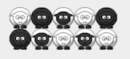
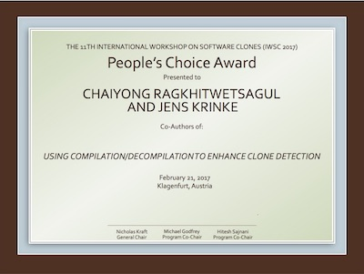

Using Compilation-Decompilation to Enhance Clone Detection


We study effects of compilation and decompilation to code clone detection in Java. Compilation/decompilation canonicalise syntactic changes made to source code and can be used as source code normalisation. We used NiCad to detect clones before and after decompilation in three open source software systems, JUnit, JFreeChart, and Tomcat. We filtered and compared the clones in the original and decompiled clone set and found that 1,201 clone pairs (78.7%) are common between the two sets while 326 pairs (21.3\%) are only in one of the sets. A manual investigation identified 325 out of the 326 pairs as true clones. The 252 original-only clone pairs contain a single false positive while the 74 decompiled-only clone pairs are all true positives. Many clones in the original source code that are detected only after decompilation are type-3 clones that are difficult to detect due to added or deleted statements, keywords, package names; flipped if-else statements; or changed loops. We suggest to use decompilation as normalisation to compliment clone detection. By combining clones found before and after decompilation, one can achieve higher recall without losing precision.
Accepted at IWSC 2017 and won the People's Choice Award!
C. Ragkhitwetsagul, J. KrinkeWe study effects of compilation and decompilation to code clone detection in Java. Compilation/decompilation canonicalise syntactic changes made to source code and can be used as source code normalisation. We used NiCad to detect clones before and after decompilation in three open source software systems, JUnit, JFreeChart, and Tomcat. We filtered and compared the clones in the original and decompiled clone set and found that 1,201 clone pairs (78.7%) are common between the two sets while 326 pairs (21.3\%) are only in one of the sets. A manual investigation identified 325 out of the 326 pairs as true clones. The 252 original-only clone pairs contain a single false positive while the 74 decompiled-only clone pairs are all true positives. Many clones in the original source code that are detected only after decompilation are type-3 clones that are difficult to detect due to added or deleted statements, keywords, package names; flipped if-else statements; or changed loops. We suggest to use decompilation as normalisation to compliment clone detection. By combining clones found before and after decompilation, one can achieve higher recall without losing precision.

Measuring Code Similarity in Large-scaled Code Corpora
Accepted at ICSME 2016 Doctoral Symposium!
C. RagkhitwetsagulThere are numerous tools available to measure code similarity in the past decades. These tools are created for specific use cases and come with several parameters which are sensitive to dataset and have to be tuned carefully to obtain the optimal tool’s performance. We have evaluated 30 similarity analysers for source code similarity and found that specialised tools such as clone and plagiarism detectors, with proper parameter tuning, outperform general techniques such as string matching. Unfortunately, although these specialised tools can handle code similarity in a local code base, they fail to locate similar code artefacts from a large-scaled corpora. This challenge is important since the amount of online source code is rising and at the same time being reused oftenly. Hence, we propose a scalable search system specifically designed for source code. Our proposed code search framework based on information retrieval, tokenisation, code normalisation, and variable-length gram. This framework will be able to locate similar code artefacts not only based on textual similarity, but also syntactic and structural similarity. It is also resilient to incomplete code fragments that are normally found on the Internet.

Similarity of Source Code in the Presence of Pervasive Modifications
Accepted at SCAM 2016!
C. Ragkhitwetsagul, J. Krinke,D. Clark
Source code analysis to detect code cloning, code plagiarism, and code reuse suffers from the problem of pervasive code modifications, i.e. transformations that may have a global effect. We compare 30 similarity detection techniques and tools against pervasive code modifications. We evaluate the tools using two experimental scenarios for Java source code. These are (1) pervasive modifications created with tools for source code and bytecode obfuscation and (2) source code normalisation through compilation and decompilation using different decompilers. Our experimental results show that highly specialised source code similarity detection techniques and tools can perform better than more general, textual similarity measures. Our study strongly validates the use of compilation/decompilation as a normalisation technique. Its use reduced false classifications to zero for six of the tools. This broad, thorough study is the largest in existence and potentially an invaluable guide for future users of similarity detection in source code.

Searching for Configurations in Clone Evalution: A Replication Study
Accepted at SSBSE 2016!
C. Ragkhitwetsagul, M. Paixao,M. Adham, S. Busari, J. Krinke and J.H. Drake
Clone detection is the process of finding duplicated code within a software code base in an automated manner. It is useful in several areas of software development such as code quality analysis, bug detection, and program understanding. We replicate a study of a genetic- algorithm based framework that optimises parameters for clone agree- ment (EvaClone). We apply the framework to 14 releases of Mockito, a Java mocking framework. We observe that the optimised parameters outperform the tools’ default parameters in term of clone agreement by 19.91% to 66.43%. However, the framework gives undesirable results in term of clone quality. EvoClone either maximises or minimises a number of clones in order to achieve the highest agreement resulting in more false positives or false negatives introduced consequently.

Honedew: Predicting meeting date using machine learning algorithm
Project from master degree
C. Ragkhitwetsagul
Today scheduling a meeting via email becomes widely used. However, creating a meeting in a user’s calendar can be tedious. Honeydew is an intelligent agent, which uses machine-learning algorithms to extract all required information from a meeting email. Then it creates suggestions for the user. The user can verify the suggestions, and proceed to place the meeting in his calendar. The agent can dramatically reduce user’s workload of extracting all information from emails and put them in his calendar application. The agent also automatically improves its performances by learning from suggestions that is corrected by human users. This paper discusses an algorithm used for predicting meetings date from content in emails. It also includes the evaluation results of the system.
C. Ragkhitwetsagul
Today scheduling a meeting via email becomes widely used. However, creating a meeting in a user’s calendar can be tedious. Honeydew is an intelligent agent, which uses machine-learning algorithms to extract all required information from a meeting email. Then it creates suggestions for the user. The user can verify the suggestions, and proceed to place the meeting in his calendar. The agent can dramatically reduce user’s workload of extracting all information from emails and put them in his calendar application. The agent also automatically improves its performances by learning from suggestions that is corrected by human users. This paper discusses an algorithm used for predicting meetings date from content in emails. It also includes the evaluation results of the system.
FoxBeacon: Web Bug Detector Implementing P3P Compact Policy for Mozilla Firefox
Project from master degree
C. Ragkhitwetsagul
This paper describes the design, implementation, and evaluation of a web bug detector called “FoxBeacon.” This detector is originally designed to be an extension of Mozilla Firefox. After being installed, FoxBeacon embeds itself into the Firefox browser and acts as a proxy. It reads every incoming web page and trying to find hidden web bugs. FoxBeacon treats each image as a web bug according to the pre-defined rules. In addition, FoxBeacon also includes the compact policy, one component of Platform of Privacy Policy (P3P), to incorporate and provide more information to its users. This paper also covers the evaluation of FoxBeacon functionalities and its results. The ultimate goal of this project is to optimize between least disruption to the browser’s users and the most effective way in order to make the users aware of the hidden web bugs. In addition, reducing the number of false negatives and false positive is also another important goal.
C. Ragkhitwetsagul
This paper describes the design, implementation, and evaluation of a web bug detector called “FoxBeacon.” This detector is originally designed to be an extension of Mozilla Firefox. After being installed, FoxBeacon embeds itself into the Firefox browser and acts as a proxy. It reads every incoming web page and trying to find hidden web bugs. FoxBeacon treats each image as a web bug according to the pre-defined rules. In addition, FoxBeacon also includes the compact policy, one component of Platform of Privacy Policy (P3P), to incorporate and provide more information to its users. This paper also covers the evaluation of FoxBeacon functionalities and its results. The ultimate goal of this project is to optimize between least disruption to the browser’s users and the most effective way in order to make the users aware of the hidden web bugs. In addition, reducing the number of false negatives and false positive is also another important goal.

Evaluating Genetic Algorithm for selection of similarity functions for record linkage
Project from master degree
F. Shaikh and C. Ragkhitwetsagul
Machine learning algorithms have been successfully employed in solving the record linkage problem. Machine learning casts the record linkage problem as a classification problem by training a classifier that classifies 2 records as duplicates or unique. Irrespective of the machine learning algorithm used, the initial step in training a classifier involves selecting a set of similarity functions to be applied to each attribute to get a similarity measure. Usually this is done manually with input from a domain expert. We evaluate an approach in which the optimal combination of similarity function for a given type of input data records is searched using Genetic Algorithms.
F. Shaikh and C. Ragkhitwetsagul
Machine learning algorithms have been successfully employed in solving the record linkage problem. Machine learning casts the record linkage problem as a classification problem by training a classifier that classifies 2 records as duplicates or unique. Irrespective of the machine learning algorithm used, the initial step in training a classifier involves selecting a set of similarity functions to be applied to each attribute to get a similarity measure. Usually this is done manually with input from a domain expert. We evaluate an approach in which the optimal combination of similarity function for a given type of input data records is searched using Genetic Algorithms.

Hercules File System:
A Scalable Fault Tolerant Distributed File System
Project from master degree
F. Shaikh, C. Ragkhitwetsagul,
A.R. Pathan
We introduce the design of the Hercules File System (HFS), a distributed file system with scalable MDS cluster and scalable and fault-tolerant DS cluster. The Hercules File System allows Metadata and Data Servers to be dynamically added to the MDS cluster even after the initial setup time while the system is up and running without disrupting the normal operations carried out by the file system. The file system is also fault-tolerant and can serve clients in the events of failures of the DS and MDS. A Health Monitor is also designed which is a GUI tool that monitors the state of the servers of the File System and also gives the run-time visualization of operations requested by the clients.
F. Shaikh, C. Ragkhitwetsagul,
A.R. Pathan
We introduce the design of the Hercules File System (HFS), a distributed file system with scalable MDS cluster and scalable and fault-tolerant DS cluster. The Hercules File System allows Metadata and Data Servers to be dynamically added to the MDS cluster even after the initial setup time while the system is up and running without disrupting the normal operations carried out by the file system. The file system is also fault-tolerant and can serve clients in the events of failures of the DS and MDS. A Health Monitor is also designed which is a GUI tool that monitors the state of the servers of the File System and also gives the run-time visualization of operations requested by the clients.